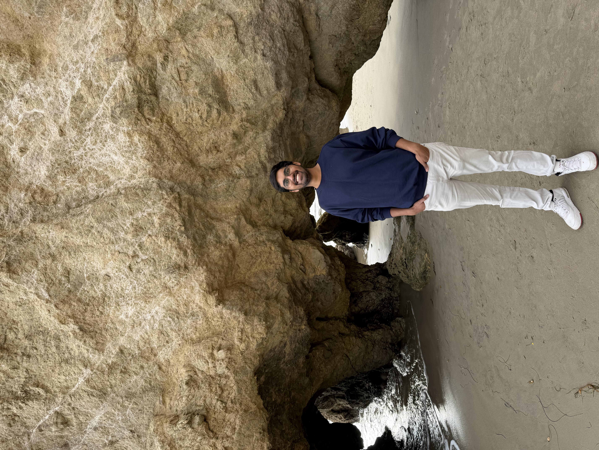

Meet your course facilitators for Linux Kernel Programming and Introduction to Yocto Project! They will be available to assist you during your learning experience by answering questions and offering weekly office hours over Zoom. Please click "Live Events" in the course menu on the left to participate in office hours.
To contact your course facilitator, email: msece-support@colorado.edu. Please include ECEA 5306 in the subject line!

Hi there! I'm Omkar Sangrulkar, a Master's student in Electrical and Computer Engineering with a focus on Embedded Systems at the University of Colorado Boulder. I’m passionate about how embedded systems can transform ideas into products that simplify our lives and make a real difference. When I’m not working on projects or exploring new tech, I enjoy spending time in the mountains and soaking in the beauty of nature. I’m here to assist you with any questions you might have—feel free to reach out or stop by during office hours. Looking forward to helping you succeed!
Office Hours:
Monday 9:00 AM to 12:00 PM MT
Thursday 5:00 PM to 8:00 PM MT
Best Contact Method: msece-support@colorado.edu | Please include ECEA 5306 in the subject line
Slack: MSECE on Coursera | cubouldermsee.slack.com | #ecea-5306